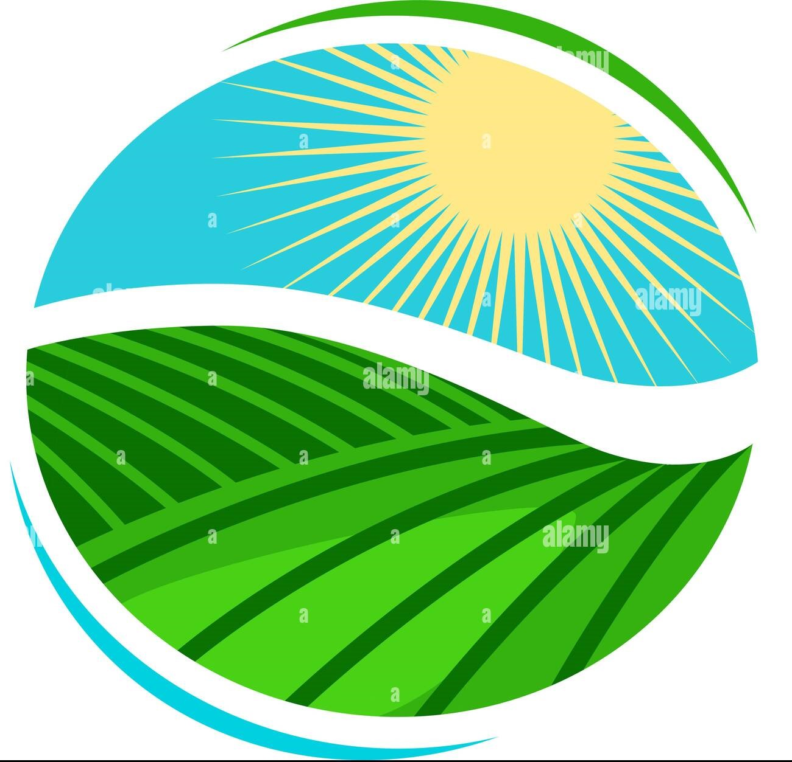

<div class="green-bar " >

    

    <div class ="aa" (click)="openModel1()" >
    <i class=" fas fa-bell"></i> </div>

 <div class ="aa" (click)="openModel()" >
    <i class=" fas fa-user"></i> 
     <div class=" text-right">{{donnee.nom}}</div>
    
    </div></div> 

<div class="sidenav" [ngClass]="collapsed ? 'sidenav-collapsed':''">
    <div class="logo-container">
        
        <div class="logo-text" @fadeInOut *ngIf="collapsed">SmartFarm</div><!-- -->
        <button class="btn-close" @rotate *ngIf="collapsed" (click)="closeSidenav()">
            <i class="fal fa-times close-icon"></i>
        </button>
    </div>
    <ul class="sidenav-nav">
        <li class="sidenav-nav-item" *ngFor="let data of navData">
            <a class="sidenav-nav-link" [routerLink]="[data.routeLink]" routerLinkActive="active" [routerLinkActiveOptions]="{exact: true}">
                <i class="sidenav-link-icon" [class]="data.icon"></i>
                <span class="sidenav-link-text" @fadeInOut *ngIf="collapsed">{{data.label}}</span>
            </a>
        </li>
        <li class="sidenav-nav-item1" *ngFor="let data of outData" style="margin-bottom: 30px;">
            <a class="sidenav-nav-link1" [routerLink]="'/navbar'" routerLinkActive="active" [routerLinkActiveOptions]="{exact: true}" (click)="logout()">
                <i class="logout-icon" [class]="data.icon"></i>
                <span class="sidenav-link-text-logout" @fadeInOut *ngIf="collapsed">{{data.label}}</span>
            </a>
        </li>
    </ul>